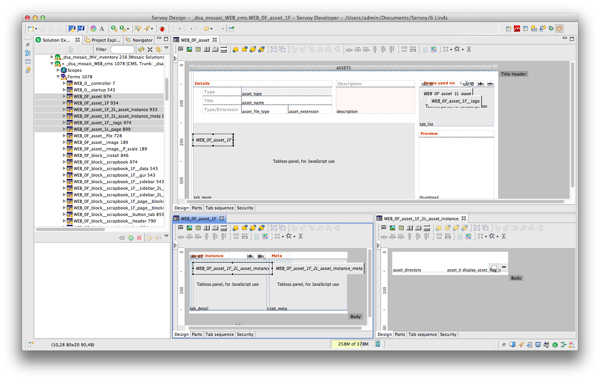
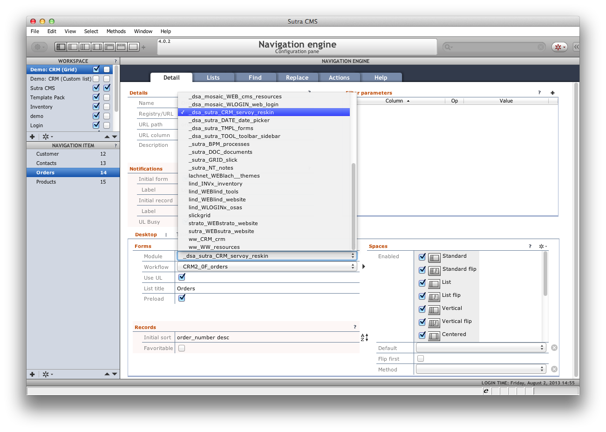
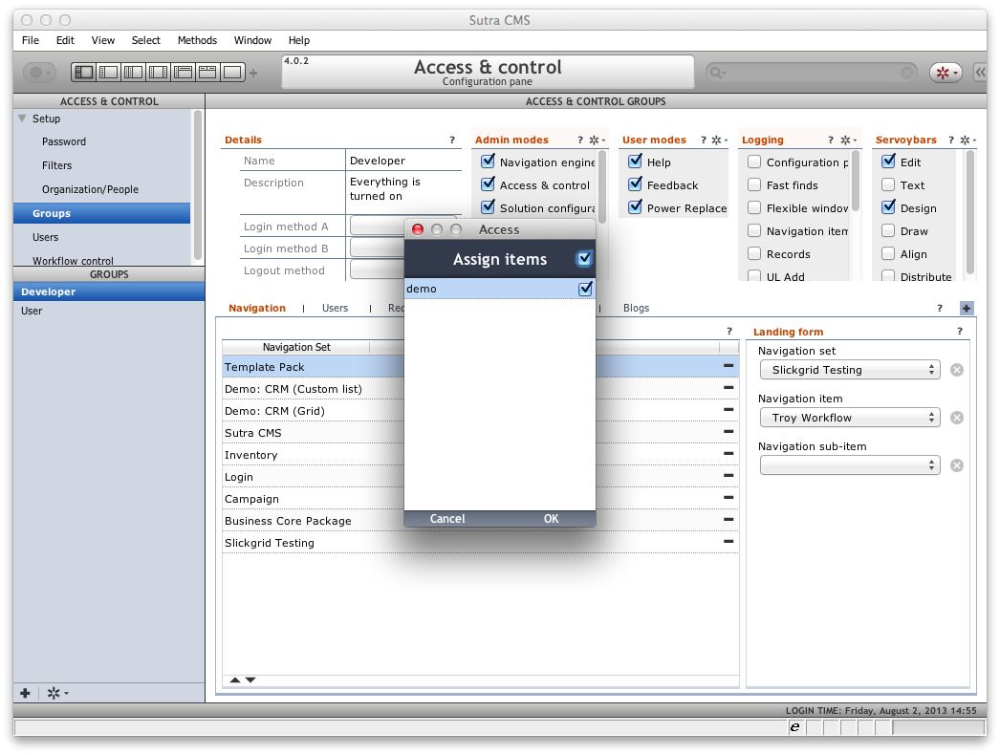

Your First App
- Concepts
- Create a module
- Include Data Sutra resource module
- Your turn!
- Connect your module to Data Sutra
- Configure navigation
- Configure security
- Some final thoughts
Concepts
Data Sutra is a collection of modules that are in your workspace after installation. Various modules provide different functionality and are encapsulated into modules to organize development on our end.
However, you only have to worry about two things: how to add Data Sutra resources into your app and how to add your app into the Data Sutra framework. From there on it is all configuration.
Create a module
It is a good idea to put all of your code—relations, forms, fields, value lists, etc—in your own module instead of modifying or extending one of ours.
(Reminder from install instructions: it is also good practice to create your own database connection to store your apps data in instead of adding tables to one of our connections.)
Besides keeping your code organized and away from ours, your own modules allow you to use your flavor of team sharing (SVN, GiT, Mercurial, etc) and upgrade Data Sutra independently of your code. If you want to live on the cutting edge, you can even hook up our modules to their respective open source SVN repositories and pull down changes as they are made (not recommended unless you’re on a project with us or you think breaking things is fun!).
How to create a module
- Right-click on the “All Solutions” node of the Servoy Explorer pane
and “Create new solution”. You will go through a short wizard to
name your solution/module.

- Set the
solution typeof your new module. Set this toModule. This will allow your code to run in both smart and web client. Alternately you can choose smart or web client only settings.
Naming conventions!
What/how you name your module isn’t really important except that it has to be a unique name within the activated set of modules comprising of Data Sutra and your modules.
Where naming becomes important is that many of the names for objects (forms, relations, value lists, etc) your module contains also have to be unique across—you guessed it—the activated set of modules comprising of Data Sutra and your modules.
A simple way to avoid naming collisions is to prepend all of your object names in a particular module with a unique identifier for that module. To make it easy for you to remember the unique identifier for your module, put the identifier in the module name in CAPS.
A quick glance at a Data Sutra module list shows it all working in practice:

Include Data Sutra resource module
Including modules is a great way to share code across modules. Including the Data Sutra resource module gives you quick access to the Data Sutra styles, API, helper functions, etc—just like you created all that code in your own module.
How to include
- select your module in the
Solution Explorer - go to the properties pane
- select the
moduleNamesproperty - add the module
_ds_CODE_resources
Important considerations
Cyclical module inclusion is not allowed! So for example, after including a resource module in your module—don’t include your module in that particular resource module.
This restriction impacts how you organize and structure solutions for the most amount of flexibility and code reuse. As applications grow in size, the more impact good structure has (or bad structure!).
A couple of tips:
A you develop more and more generic routines over time you should split those out into your own resource module so you can share them between your business modules.
Typically, a single business module will include GUI layer stuff such as forms; model layer stuff such as entity methods, relations, value lists; business logic stuff in the form of various methods; and security stuff such as who can do what, when and where.
If you create another business module and you notice yourself duplicating any of those layers to get going with the new module (typically the model layer; ie. duplication of relations), also putting that stuff in a resource module will allow you to use the same stuff in both modules.
You can start to see that there is a method to the madness of the module list that comes with Data Sutra. For the noob, don’t worry about it for now and just put all your code in one module. With Data Sutra, the only mess you can make is restricted to your own module! (We get to deal with our own messes….)
Your turn!
Servoy is a form-based development environment. Forms are your GUI
canvas where you add various UI and functional components. Additionally,
you can create and store methods at the form level. Methods at the form
level “know” everything about the form without having to reference the
form explicitly. For example, if a form is bound to a data source all
you have to do to reference a column in the data source is type the name
of the column: var firstName = name_first.
Your first form
Forms can be displayed as the top level page by either setting it as the startup form of your app or navigating to a form with navigation code (or picking from the toolbar in smart client).
In Data Sutra, you assign your form to a navigation item in the
Navigation Engine configuration pane. You also assign viewing
privileges in the Access and Control configuration pane to groups.
Forms as components
Forms can also be displayed on other forms via the tab panel component. In this way, you can combine many forms together (and many levels “deep”) to build up a complex interface that looks like one page to the user. We often use the term “form stack” to refer to all the forms that make up one interface.

Forms and data binding
Forms can be bound to a data source. The most common data source is a table in a SQL database. When forms have a data source, when you place field components onto the form they can be assigned to the form’s data source columns (or related columns). Forms and fields together are the basic level of design-time data binding in Servoy.
Forms have a view property that you can set to one of the following:
Record view | List view | Table view. Record view shows one record at
a time while the other two views show the current collection of records
(whatever is in the table with whatever searches you may or may not have
applied).

Events and properties
Every object in Servoy has their own unique events and properties that defined the behavior of that object.
Properties are usually set at design-time and can be modified at runtime
with methods. Events are the hooks where you attach your methods.
onShow and onRecordSelection are form events that we seem to use the
most.
Code
There are a lot of places to store code at in Servoy: globals, scopes, tables, calculations, and forms.
Typically, code stored at the form level is where your app’s heavy lifting is done. You may be validating a particular piece of data, guiding the user through a process of steps, munging together complex data structures, etc. This kind of code can get messy (for good reasons) and usually has no use outside of what is being done right there.
As you develop code that is more abstract and reusable, store this code
somewhere besides on a form. For easy reference a scope (named global)
is a good place. If your code functions as a business rule for your
data, store as a table method (and hook up to a table event so it is run
no matter what else is happening).
Lastly, methods stored on your form can be easily attached to Data
Sutra’s action buttons in the Navigation engine. This frees you from
having to create your own buttons on your forms to wire up common
functionality. This helps keep your UX consistent across all your forms.
And what action buttons do exist on a particular form are then
automatically assumed to be very form-specific functionality.

UI
If you suck at making nice user interfaces, you’re hardly alone. Even for really good designers, coming up with a new UI from scratch is a laborious process. So…
DON’T START YOUR UI FROM SCRATCH
The mere fact that your forms end up inside the Data Sutra layout manager gives you a starting edge. However, there are a number of things you can do when working with forms that will make the creative process go easier.
1. Use our grid theme
Set the style of your forms to “DATASUTRA”. This gives you a style sheet for development that translates into specific style sheets for each smart client platform (Mac, Windows and Linux) as well as for the web.
In addition to default styling for objects such as the form, comboboxes,
tab panels, row background colors, etc—there are multiple style classes
you can choose from for objects such as labels and fields. A
click-through of the objects on one of our sample forms while keeping an
eye on the styleClass property will give you an idea of the options.
Stray from our style class options at your own risk! It’s a dangerous
world out there and who likes to think that hard? (Don’t touch that
color picker…don’t do it!)
2. Line !@#$ up you lazy bastard
Seriously, why do I even have to say this. Because programmers are the only people I know where I repeatedly find objects dumped on a screen in haphazard fashion. It’s like we all grew up never having to clean our rooms. Or when we did, we threw everything in the closet.
Please don’t subject the rest of the world to your crap. Clean it up. Make sure objects align. Don’t make one field slightly bigger than another. Don’t plunk a button down in the middle of the screen. Do your best to hide the fact that you’re not a normal human being.
3. Anchor elements
Within a form there are various sections and groups of components. Making sure the various groups expand/contract and go where they’re supposed to go when the window is resized is just good practice.
4. Organize your data
Not all data is created equal. So don’t go putting the year-end profit goal field next to the first name field. Yes, I’m talking to you over there.
Take a look at one of the prior screenshots and notice how we’ve organized the data into the following buckets:
- detail
- informational
- meta
- related
- summary
5. Choose a workflow focus for your form
We’ve also arranged the data types from top-left to bottom-right in order of most discrete to least discrete. This is the arrangement we typically use for forms that handle CRUD types of interactions. Other types of interactions (dashboards, drill-down reporting) may have this order flipped: start with the most top-view data and end with a list of all the items (for example).
Don’t try to implement multiple workflow focuses with one form. It’s pretty hard to create something that is easy to use for both data entry and reporting. But you can trigger reports from a data entry screen. Or you could drill down from a report to the details, change a data point and view the report again.
Focus on one thing doesn’t mean don’t use the other things, just use the other things sparingly.
6. Don’t start with a blank form
Duplicate one of our forms. Sometimes it’s easier to cut stuff out than it is to add stuff in.
7. Use our form tab panel controllers

For tab panels we don’t use the default tabs. This is accomplished by
setting the tabOrientation to HIDE and rolling our own tab
controller via a combination of labels, naming conventions, and some
default code.
Now this one deserves a wiki page all its own but for now if take a look at one of our many examples, note that it all relies on the name of the tab panel and the names of the labels used at the controllers for the tab panel. Then it’s just one generic method attached to all of the tab labels to make it work.
8. Use our tab panel action buttons

Notice that in the previous screen shot there was a + button at the
top of the tab panels for and action (new record) that is applied to
each list in the tab panel. Now this is a special case to implement
because the button itself is on the form the tab panel is one while the
new record action to be run are methods on the forms attached to the
tab panels.
One way to do this would be to write a method on the parent form that called each of the sub-form methods based on what form is in which tab slot. We’ve gone a step further and have written a generic method that you attach to the + button that looks for the method named “REC_new” on the sub-forms and runs that method for whatever form is currently showing in the tab panel.
This approach can even be used when you want the “wheel” action bottom (drop down list of actions) applied to a tab panel. The method attached to the “wheel” button calls methods by naming convention on the tab panel sub forms. The sub form specific methods are responsible for loading the popup menu list and running code when a list item is selected.

These pics show completely different sets of actions depending on which tab panel item is active.
Summary
Creating a good UI is not a function of how creative you are. Creating a good UI is a function of applying engineering best practices to a design that has already been created and tested.
Connect your module to Data Sutra
Once you connect your module up with Data Sutra, all of Data Sutra’s setup and configuration panes know all about your module.
How to connect your module to Data Sutra
- make sure the main Data Sutra module is activated (
__DATASUTRA__) in theSolution Explorer - under the
Modulesnode, select the__datasutra_connectormodule - go to the properties pane
- select the
moduleNamesproperty - add your module
- restart smart client if you already have it open
Configure navigation
Data Sutra’s Navigation Engine configuration pane is the centerpiece
of a Data Sutra application.

Bare minimum configuration
- create a new workspace
- create a navigation item
- assign a form from your module to
Desktop > Workflow
Universal List
To enable our no-required-list to go with your form:
- check on
Desktop > Use UL - go to the
Liststab and configure your lists
Fast find and Replace
To enable our default searching capabilities for your form:
- go to the
Findtab and configure fast find items - go to the
Replacetab to configure power find and replace functionality
Wire in workflow actions
To hook your workflow methods up to our action buttons:
- go the
Actionstab and connect your methods up ourAddandWheelbuttons - add your reports to our
Reportsbutton - configure quick filters that will show up on our
Filtersbutton - turn on transaction mode for your form (default code already implemented which you can override)

Configure security
If you have Access and Control (a configuration pane) turned on, you
will need to add your new workspace and associated navigation items to
the group privileges for a user to have access to your new app!
How to add to a group
- open up the
Access & Controlconfiguration pane - go to
Groups - on the
Navigationtab, add your workspace (“navigation set”) - relogin

Some final thoughts
The collaborative iterative process
Because you can so quickly put together a useful workflow with Data Sutra, the iterative process involving input from your users and other stakeholders can be very collaborative. Code-test-code-test-deploy-test-spec-test-etc and so on can be done in such a way that everyone knows what is going on and can have a say.
Value proposition
On the simple side, Data Sutra allows you to quickly setup navigation, core functionality, and security for you forms. Advantages:
- full application from the start of your coding process
- a LOT of code you don’t have to write
- easy to reconfigure
- won’t run into trouble as your application grows
On the complex side, you probably have noticed a bunch of advanced options as you’ve perused the various configuration panes. SaaS setup, security with workflow controls, custom record filtering, branding, create your own toolbars and sidebars—the list goes on and on.
So for all its easy of use, Data Sutra won’t limit your future possibilities.
Approach comparison
You may have heard of or run into the “extend form” approach to frameworking with Servoy. Servoy’s ISV framework uses this approach for example.
The basic idea is that when you create a form, instead of creating a blank form from scratch you “extend” a set of base forms. Your form then has navigation, security and whatnot available right at your form level.
This differs from our approach in that we don’t add all that stuff to your form. You add your stuff to our stuff instead. We feel our approach allows you to focus better on writing just the code for your business workflow without being bothered with what the application framework does for you. Of course within your own workflow form, you can split out functionality into various forms and extend those forms. So you get the best of both approaches with Data Sutra.